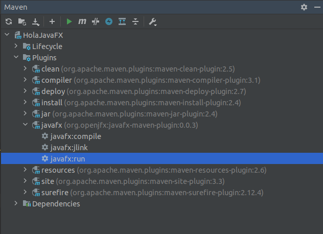
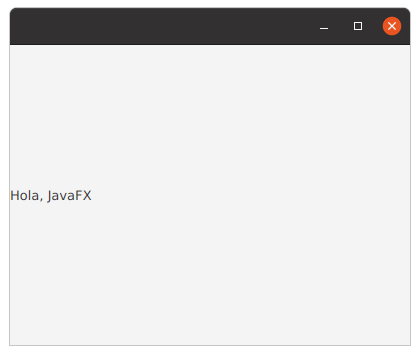

Programación Avanzada
Interfaces Gráficas de Usuario
Introducción a JavaFX
Óscar Belmonte Fernández
Introducción
Java proporciona tres bibliotecas para crear Interfaces Gráficas de Usuario (GUI): AWT, Swing y JavaFX.
Las dos primeras están obsoletas. JavaFX es la biblioteca recomendada para crear GUIs.
Bibliografía
- Head first design patterns.
- The Definitive Guide to Modern Java Clients with JavaFX : Cross-Platform Mobile and Cloud Development.
- Mastering JavaFX 10
Al último, tienes acceso desde la web de la biblioteca.
Contenidos
Qué es JavaFX
Qué es JavaFX
JavaFX es una biblioteca Java ligera para crear Interfaces Gráficas de Usuario (Graphical User Interface - GUI).
Ligera significa que tanto el dibujo de los componentes, como la detección de los eventos, nos los proporciona JavaFX, sin llamadas al sistema operativo.
El plugin para una aplicación JavaFX
El plugin para una aplicación JavaFX
La manera recomendada para crear aplicaciones JavaFX, y ejecutarlas, es mediante la correspondiente dependencia, y el plugin para ejecutar la aplicación.
Tienes un ejemplo en el github de asignatura, proyecto HolaJavaFX.
Este es el código del ejemplo:
public class Main extends Application {
public static void main(String[] args) {
launch(args);
}
@Override
public void start(Stage stage) throws Exception {
Label label = new Label("Hola, JavaFX");
Scene scene = new Scene(label, 400, 300);
stage.setScene(scene);
stage.show();
}
}
La clase que contenga el método main debe extender a la clase Application.
Para ejecutar la aplicación utilizamos el plugin de javafx:
O bien, desde una consola
mvn clean javafx:run
Y este es el resultado:
De momento no es muy emocionante.
El grafo de escena
El grafo de escena
Las GUIs se crean en JavaFX construyendo un grafo de escena.

El escenario (stage) se corresponde con una ventana.
Nuestra aplicación puede tener todas las ventanas que necesitemos.
La escena (scene) se corresponde con el contenido del escenario.
Un escenario sólo puede tener asociada una escena, y una escena sólo puede estar asignada a un escenario.
El grafo de escena está formado por todos los nodos que contiene la escena.
Los nodos que forman parte de una escena pueden ser de dos tipos:
- Nodos de layout: gestionan la colocación de los controles.
- Nodos control: componentes gráficos como botones, listas, etc.
- Un escenario sólo puede contener una escena.
- Una escena sólo puede estar contenida dentro de un escenario.
- Un nodo sólo puede estar en un grafo de escena.
- Un nodo sólo se puede añadir una única vez a un grafo de escena.
- Un nodo layout puede contener otros nodos, tanto layout como componentes.
- Un nodo control no puede contener otros nodos.
Aquí tienes todos los ingredientes juntos:
@Override
public void start(Stage stage) throws Exception {
Label label = new Label("Hola, JavaFX");
Scene scene = new Scene(label);
stage.setScene(scene);
stage.show();
}
El escenario (Stage) llega como argumento al método start. Creamos una etiqueta Label que añadimos a la escena Scene. Y finalmente mostramos el escenario con show().
Vamos a verlo todo con más detalles en las siguientes presentaciones.
Resumen
Resumen
JavaFX es una biblioteca ligera (hace pocas llamadas al sistema operativo) para crear interfaces gráficas de usuario (GUI).
JavaFX se basa en el concepto de grafo de escena. La GUI se construye como un grafo de escena donde cada nodo es un componente de la escena.
La biblioteca JavaFX se incluye en los proyectos como una dependencia. La ejecución se hace a través de un plugin.